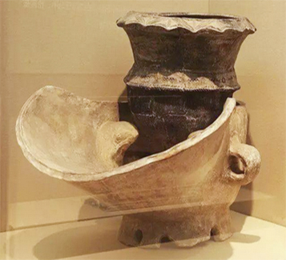
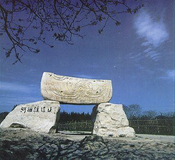
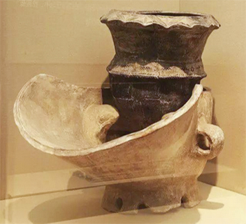
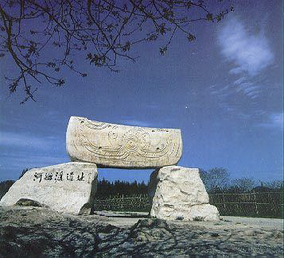

国之强大,民之大福


 





能源与消耗之间的严重不平衡使北煤南运成为中国经济发展战略调配系统的核心组成部分。
今天，煤炭形成了一个高度自动化的干散货运输系统，
这个系统正源源不断地为中国南方输送能源。
 中国制造
中国制造
搬运着这个世界

以 “中国港”
托举 中国梦


近五年，中国货物进出口总额占世界的比重，始终位居前两位。
作为全球贸易的主角，更加高效的港口和超越以往的港机装备，正牵引着全世界的目光。